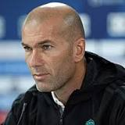

|  | Zinedine Zidane |
Zinedine Yazid Zidane was born on 23 June 1972, nicknamed "Zizou", he is a French professional football coach and former player. Widely regarded as one of the greatest players of all time, Zidane was an elite playmaker, renowned for his elegance, vision, ball control and technique, and played as an attacking midfielder for Cannes, Bordeaux, Juventus and Real Madrid.
At club level, Zidane won two Series, A league titles with Juventus, before a move to Real Madrid for a world record fee of €77.5 million in 2001, which remained unmatched for the next eight years. In Spain, Zidane won the La Liga title and the UEFA Champions League, with his left-foot volleyed winner in the 2002 UEFA Champions League Final considered to be one of the greatest goals in the competition's history. Zidane also won an Intercontinental Cup and a UEFA Super Cup with both teams.